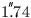
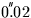
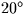
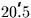
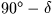

 ; it falls off rapidly with distance from the Sun and has shrunk to about
 at an elongation of .
As already described, the annual aberration is a function of the Earth's velocity relative to the solar system barycentre (available through the SLALIB routine sla_EVP) and produces shifts of up to about  .
The precession/nutation, from J2000 to the current epoch, is expressed by a rotation matrix which is available through the SLALIB routine sla_PRENUT.
The whole mean-to-apparent transformation can be done using the SLALIB routine sla_MAP. As a demonstration, here is a program which lists the North Polar Distance () of Polaris for the decade of closest approach to the Pole:
IMPLICIT NONE
DOUBLE PRECISION PI,PIBY2,D2R,S2R,AS2R
PARAMETER (PI=3.141592653589793238462643D0)
PARAMETER (D2R=PI/180D0,
: PIBY2=PI/2D0,
: S2R=PI/(12D0*3600D0),
: AS2R=PI/(180D0*3600D0))
DOUBLE PRECISION RM,DM,PR,PD,DATE,RA,DA
INTEGER J,IDS,IDE,ID,IYMDF(4),I
DOUBLE PRECISION sla_EPJ2D
CALL sla_DTF2R(02,31,49.8131D0,RM,J)
CALL sla_DAF2R(89,15,50.661D0,DM,J)
PR=+21.7272D0*S2R/100D0
PD=-1.571D0*AS2R/100D0
WRITE (*,'(1X,'//
: '''Polaris north polar distance (deg) 2096-2105''/)')
WRITE (*,'(4X,''Date'',7X''NPD''/)')
CALL sla_CLDJ(2096,1,1,DATE,J)
IDS=NINT(DATE)
CALL sla_CLDJ(2105,12,31,DATE,J)
IDE=NINT(DATE)
DO ID=IDS,IDE,10
DATE=DBLE(ID)
CALL sla_DJCAL(0,DATE,IYMDF,J)
CALL sla_MAP(RM,DM,PR,PD,0D0,0D0,2000D0,DATE,RA,DA)
WRITE (*,'(1X,I4,2I3.2,F9.5)') (IYMDF(I),I=1,3),(PIBY2-DA)/D2R
END DO
END
For cases where the transformation has to be repeated for different
times or for more than one star, the straightforward
sla_MAP
approach is apt to be
wasteful as both the Earth velocity and the
precession/nutation matrix can be re-calculated relatively
infrequently without ill effect. A more efficient method is to
perform the target-independent calculations only when necessary,
by calling
sla_MAPPA,
and then to use either
sla_MAPQKZ,
when only the  is known, or
sla_MAPQK,
when full catalogue positions, including proper motion, parallax and
radial velocity, are available. How frequently to call
sla_MAPPA
depends on the accuracy objectives; once per
night will deliver sub-arcsecond accuracy for example.
is known, or
sla_MAPQK,
when full catalogue positions, including proper motion, parallax and
radial velocity, are available. How frequently to call
sla_MAPPA
depends on the accuracy objectives; once per
night will deliver sub-arcsecond accuracy for example.
The routines sla_AMP and sla_AMPQK allow the reverse transformation, from apparent to mean place.
SLALIB --- Positional Astronomy Library